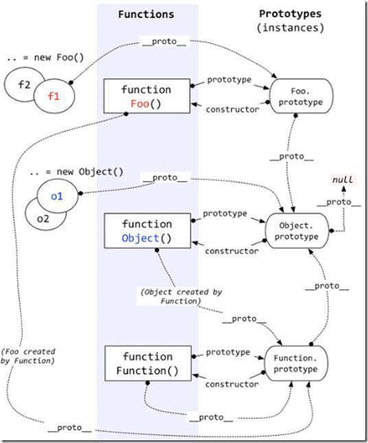

对该原型链的理解：new的新构造函数的__proto__指向原函数的prototype,原函数prototype的__proto__指向Object的prototype,Object.prototype的__proto__指向null -->此即为一条原型链
还有几条去处：
1.原函数的prototype 的 constructor 指向原函数，原函数(原函数 created by Function)的 __proto__ 指向Function.prototype(Function指函数对象),Function.prototype 的 __proto__ 指向Object的prototype, Object.prototype的__proto__指向null
2.new Object 的__proto__ 指向 Object.prototype Object.prototype 的 __proto__ -->null
3.Object.prototype 的 constructor 指向 function Object() ,function Object(Object created by function) 的__proto__ 指向 Function.prototype, Function.prototype 的__proto__ 指向Object.prototype, Object.prototype 的__proto__ --> null
4.Function.prototype .constructor 指向 Function(), Function() 的__proto__ 又指回去(Function.prototype)